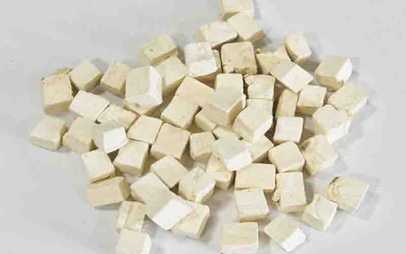

来源
豆科葛属植物野葛 Pueraria lobata (Willd.) Ohwi 的干燥块根
形态特征
多年生粗壮藤本，全株被黄褐色长硬毛，茎基部木质化，具肥厚块状根：根：块根圆柱状，肉质肥厚，外皮灰黄色或淡棕色，内部粉质，纤维性强（野葛）或粉性极足、纤维少（粉葛）；断面黄白色，野葛可见1~3层同心环状异形维管束。 茎：长可达8~10m，粗壮，具纵棱，上部多分枝，密被黄褐色长硬毛。 叶：三出复叶互生；托叶卵状长圆形（盾状着生），小托叶线状披针形；顶生小叶宽卵形或斜卵形，长7~15cm，宽5~12cm，先端长渐尖，基部圆形，偶浅裂；侧生小叶斜卵形，较顶生小叶小；两面均被淡黄色平伏柔毛，背面毛更密集，边缘全缘或微波状。花：总状花序腋生或顶生，长15~30cm，花在花序中部以上密集；苞片线状披针形（早落），小苞片卵形；花萼钟状，长8~10mm，被黄褐色柔毛，萼齿5（上面2齿合生，下面1齿最长，呈披针形）；花冠蝶形，紫色或蓝紫色，旗瓣倒卵形（基部具2短耳及黄色硬痂状附属体），翼瓣镰状（较旗瓣短），龙骨瓣镰状长圆形；雄蕊10，二体（9+1）；子房线形，被毛。果：荚果线形，长6~9cm，宽7~10mm，扁平，密被黄褐色长硬毛。种子：卵圆形，赤褐色，有光泽。 花果期：花期4~8月，果期8~10月（粉葛花果期与野葛基本一致，部分产区稍晚）。

图2
产地与生长习性
产地：房县各乡镇均产。
生长习性： 野葛：生于海拔100~2000m的山坡草丛、路旁、林下及较阴湿的沟谷，耐贫瘠、喜温暖湿润气候，对土壤要求不严（以疏松透气的沙质壤土最佳），忌积水。 粉葛：多栽培于海拔较低的丘陵、平原地带，喜光照充足、土层深厚肥沃的土壤，耐旱性较强，栽培时需注意搭架供藤蔓攀爬。 房县产区特性：房县各乡镇均产野葛，自然生长于当地山坡草丛、路旁及林下阴湿处，适配当地温凉湿润的气候条件。
采收加工
采收时间：秋、冬二季（10~12月）叶枯萎后采挖，此时块根养分积累充足，有效成分（如葛根素）含量最高。 加工步骤：采挖后除去须根、泥沙，趁鲜切成纵切长方形厚片（长5~35cm，厚0.5~1cm）或小方块，置于通风处阴干或晒干（避免暴晒过度导致有效成分流失）。
药材性状
呈纵切的长方形厚片或小方块，长5~35cm，厚0.5~1cm；表面淡棕色至棕色，具纵皱纹、横向皮孔及不规则须根痕，外皮粗糙易剥落；切面黄白色至淡黄棕色，显粉性，纤维性强，隐约可见1~3层同心环状异形维管束；质韧，不易折断；气微，味微甜（嚼之有明显纤维感）。
炮制
生葛根：取原药材（野葛或粉葛），除去杂质、残留须根及朽坏部分，洗净，润透（润透时间根据药材大小调整，避免过软导致纤维粘连），切厚片（厚2~4mm），晒干；成品为黄白色或淡黄色厚片，质韧（野葛）或质硬（粉葛），气微味甜。
性味归经
性味
甘、辛，凉
归经
归脾、胃经